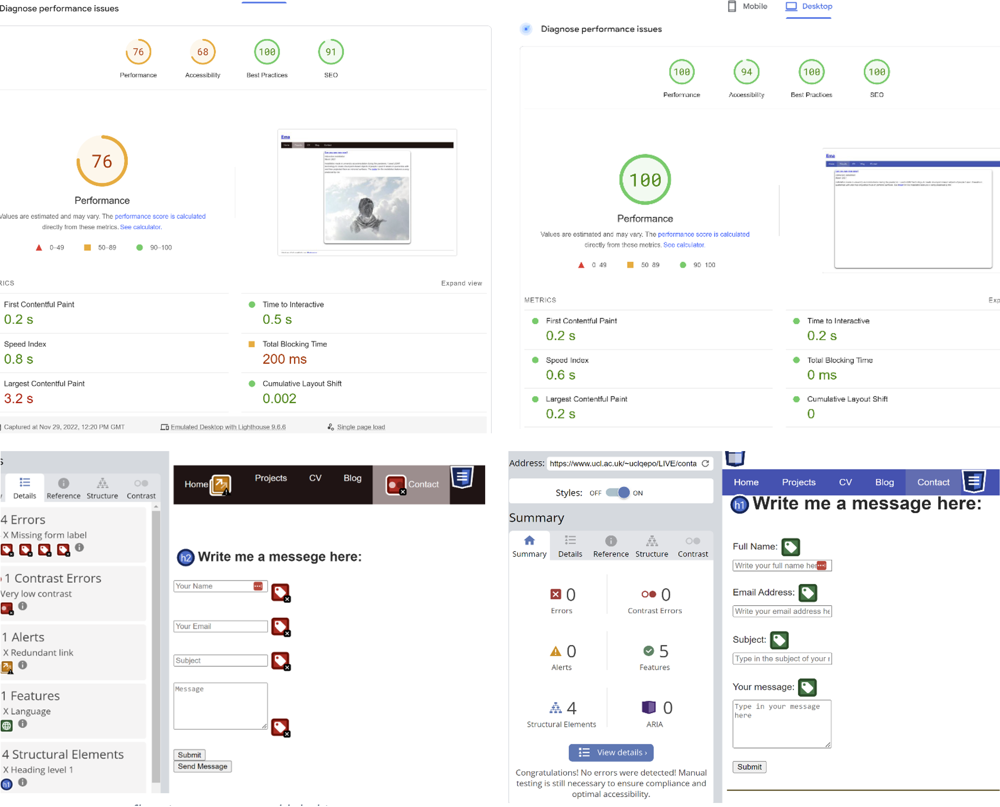
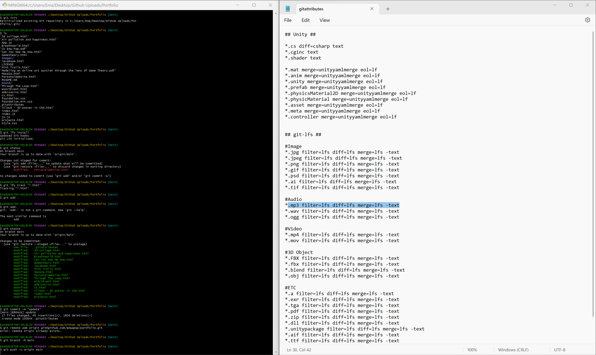

Personal Website
Process:
1. Simple Prototype:
I started roughly prototyping in Figma and pen on paper based on my content and what I wanted to show. Some designs were taken from websites that I researched and inspected their code.

2. Website Architecture given User Needs:
Next step was creating an inspiration board and using my Web Technologies module from
university to build and deploy my website. I then researched user experience principles and
constructed my website architecture according to the core readings I had done.


3. Writing basic HTML, CSS and JavaScript structure:
These were my initial attempts of codind this website on my local server, they only show how much I
managed to improve my project since starting it.


4. Website Testing:
I used a lot of metrics such as speed tests, accessibility scales, time to interact, contrast
errors, mobile accessibility, label attribution, SEO and best practice implementations.


5. Problem Solving:
There were many issues that had to be solved and new technologies that I had to learn outside my module some of which include:
- I was only taught how to use HTML, CSS and JavaScript grid and the process became extremely repetitive so I adopted the XY Foundation Grid that allowed me to greate columns and rows of cards easier.
- The method I was taught to deploy was also not state-of-the-art so I switched from my local server to using Vercel.
- The biggest problem of all was that the images I was uploading to GitHub for them to be deployed through Vercel were more than 25MB so I had to learn how to push changes through Git and therefore initiated Git LFS.
- I used the framework Foundation but am in
the
process of migrating this website to React.


Outcome: